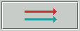
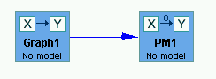
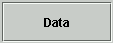
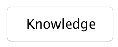
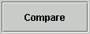
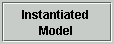
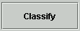

Tetrad Toolbar |
The main toolbar allows you select box types to place in the main workspace
(the white area). It also allows you to select tools for selecting and moving
boxes and for drawing arrows between them. Each button in the toolbar is explained below.
When the movement button is highlighted, the objects in the workspace can be moved around by clicking over each nodes and dragging it elsewhere in the workspace.
Once you have created a box, its contents can be opened by double clicking on it. The contents may be another workbench for creating an nodes, or may be the nodes itself once it has been created:
The button at the bottom left of the toolbar column--the one with a
red and a green arrow--permits you to make a flow chart connecting
boxes you have placed in the workspace.

To make a flow chart, simply click on the flow chart tool button, and then click
on the box you want at the tail of a flowchart arrow and drag the arrow to the
box you want at the head of the flow chart arrow. You can do this repeatedly
without having to click on the .flow chart tool button in between. Only one
flowchart arrow can connect any two boxes, but a box can have any number of
flowchart arrows out of it.

The flow chart you create provides the input to each Tetrad operation. Some
boxes require no input (e.g, the Graph boz), some require one input (e..g.,
PM box requires a Graph box as input) and some boxes require several inputs
(e.g., th Estimate box requires a Data box and a PM box.). Not all connections
are allowed, and if you attempt to connect two boxes that cannot be related
(e.g., two graph boxes), the flowchart tool will simple refuse to make the connecting
arrow.
If you put the cursor over a box and let it rest for a moment, a "tip" appears
that describes the inputs required for the operations in that box.
Each tool button when clicked allows the creation of a corresponding box inside
the workspace. Various operations can be carried out by opening a box, provided
it has appropriate inputs. The results of the operations are contained in, and
remain accessible inside of the box in whcih they are created. Running an operation
or program inside a box never creates a new box. We will describe each of the
other tool buttons and how to use them for a variety of tasks. Clicking
in this file on the tool buttons illustrated below will provide much more information
about each of their functions and operation.

Creates a Data & Similation box which can be used to load data from a file, or create
simulated data, or manipulate one data set to create another one
and allows the importation of data files from outside the
program..

Search Button
Creates a Search box, which allows one to perform a search algorithm on
specified data to produce a graph. Please see the help items for the
Search box for details, as many algorithms are available for use. The
idea is, one put a Data & Simulation box on the workbench (see above),
then puts a Search box on the workbench, then uses the Flowchart
Tool to draw an edge from the Data & Simulation box to the Search
box. One then double clicks the Data & Simulatio box and either
loads data or creates a simulation and closes this box. Then one
double clicks the Search box, selects a search algorithm using the
pull-down menus, and clicks Search. The result appears in a new
tab.

Creates a Knowledge box, which allows one to specify background
knowledge for a search. Note that the knowledge editor for
Tiers & Edges is included in the search box for algorithms that
can use it. However, other types of knowledge can ben specified,
and in some cases one wants to use the same knowledge for more
than one search. In these cases, the Knowledge box is helpful.

Creates a Comparison box. The Comparison box allows one to perform
various types of comparisons between two boxes. Many of the comparisons
take a Search and a Graph as inputs and produce a comparisons of the
edges between the two boxes. These can be used to judge how accurate
the search results are compared to a true DAG, or the pattern or PAG
of the true DAG.
Creates a Graph box. Options are:

Creates a PM box in which a parametric model can be created. A
parametric model specifies the family of probability
functions connecting cause and effect,a, but does
NOT specify values for its parameters.For example, if you open the PM
box a dialog box will come up giving simple alternatives. One
alternative, for example, is "Bayes net." If you choose that, the graph
you have specified as input to the PM box will be parametrized as a
categorical model in which the parameters are the (unspecified)
conditional probabilities of values of each variable on the values
of its parent variables in the graph. If you specify "SEM," the
graph will be parametrized as a linear Gaussian model, with variances
and linear coefficients. The values for the parameters in the
parametric model selected are NOT in PM. They must be specified in an
IM box, which must have a flowchart arrow from a PM box directed into
it.

Creates an IM box, which can be used to create an instantiated
model. An instantiated model specifies particular numberical values
for the parameters of a parametric model. Arbitrary parameter values
are entered randomly and can be edited in a window created from the IM
box

Creates an Estimator box. Given a PM and Data, the procedures in the
statistical estimator allow estimation of the parameters--that is,
creation of an instantiated model, based on the Data input to the
Estimator box. Estimators include maximum liklelihood and
Dirichlet types. There are also procedures
for handling missing values.

Creates an Update box. The Update box requires input from an IM box that is a Bayes net--i.e., is for discrete variables. It will compute the conditional probability of any variable in the Bayes net given values for any other variables in the model. It will also compute such probabilities condiitonal on an intervention the fixes or randomizes other variables.

Classify creates a Classifier box, which requires input from Data and from an IM box. It is used to classify new cases with the Bayes net in the IM box.. The variables in the IM box must match some of the variables in the Data. The user specifies a target variable in the IM and the classifier uses the Bayes net structure of the IM to predict the values of the target in the data set. Statistics on classification accuracy are provided (as ROC curves and confusion matrices.)

Creates a Regression box, which allows the user to perform multiple linear regressions or logistic regressions.